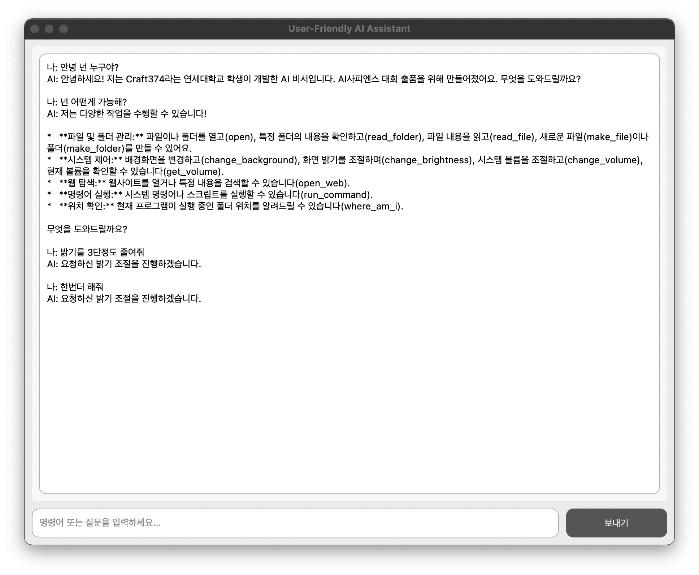
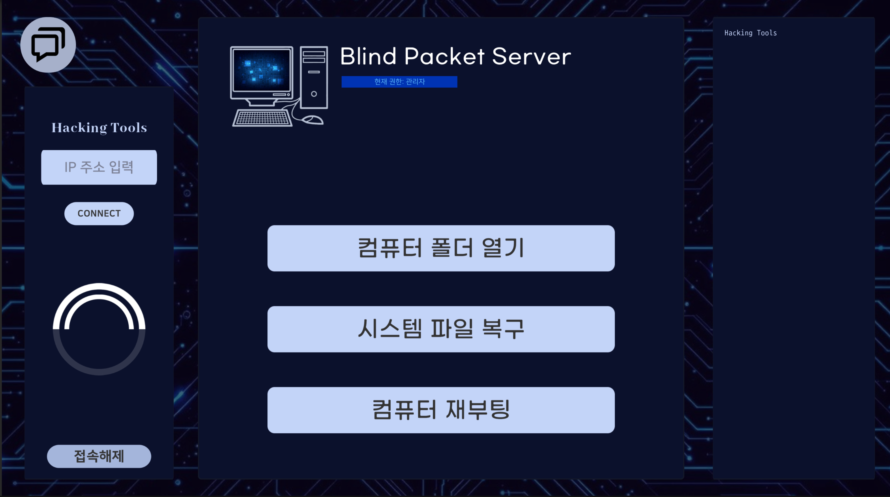
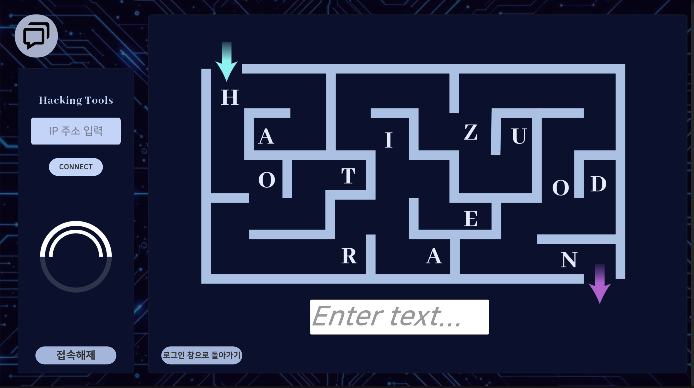
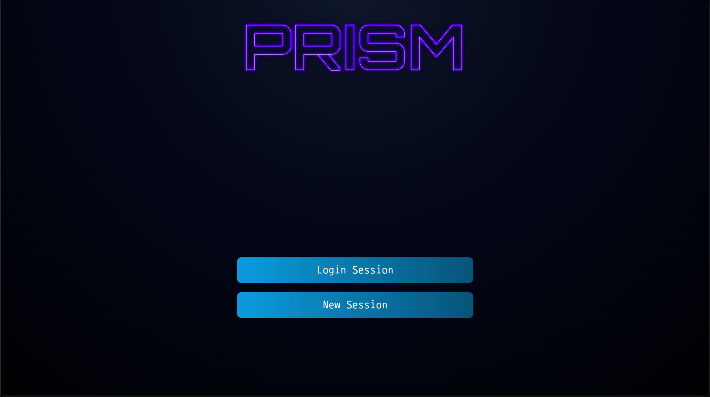
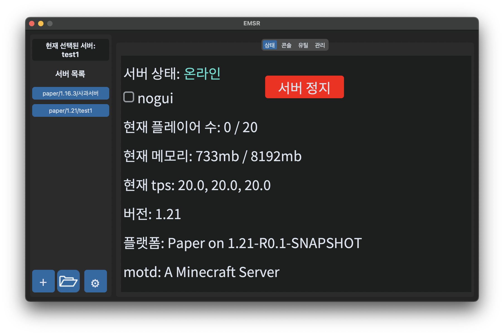
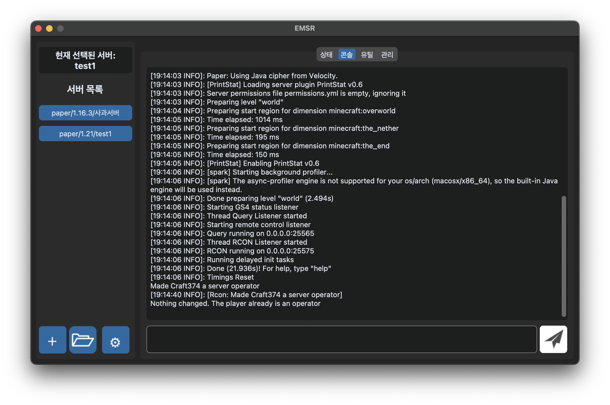
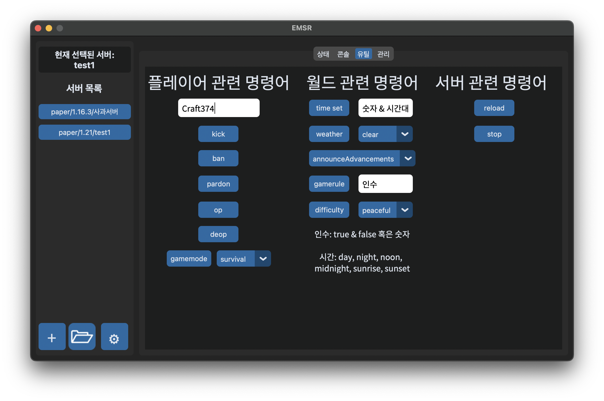
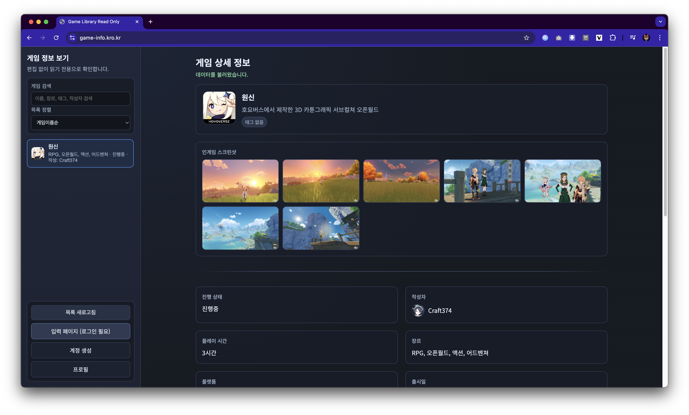
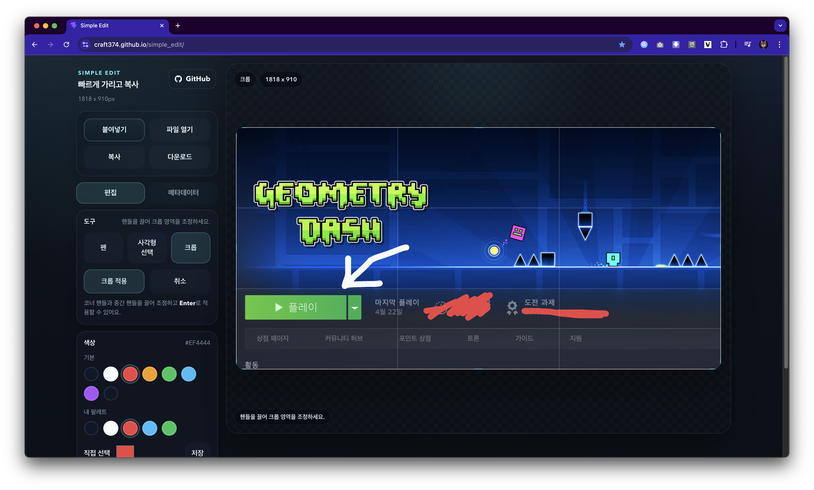
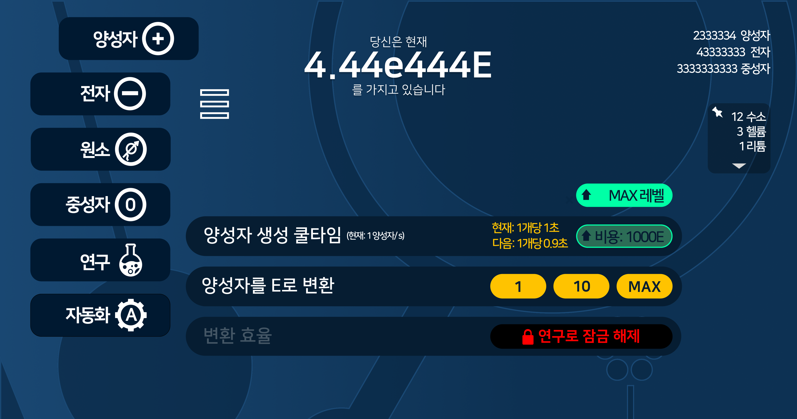

build first
CRAFT374 / CLEAN SYSTEMS / MEMORABLE BUILDS
단순하게 정리하고,
오래 기억되는 경험을 만듭니다.
AI 비서, 게임, 도구를 직접 만들고 끝까지 다듬습니다. 구조는 빠르게 읽히게 두고, 인상은 한 번 더 보게 만드는 쪽을 좋아합니다.
BUILDING SYSTEMS THAT FEEL CLEAR
Available for thoughtful projectsgrowing
clear interactions
from idea to polish
구조를 먼저 세우고, 그 위에 디테일을 얹습니다.
그래서 화면은 차분한데도 심심하지 않게 남습니다.
ABOUT
정돈된 구조 위에, 기억에 남는 디테일을 얹습니다.
과한 장식 대신 시선이 머무는 포인트만 남기고, 카드 구성과 문장 밀도는 최대한 간결하게 정리했습니다.
바로 읽히는 구조
첫 화면에서 내가 어떤 작업을 하는 사람인지 빠르게 이해되게 만듭니다.
가까이 보면 살아있는 디테일
빛, 선, 모노 텍스트 같은 장식은 얇게만 두어 전체 인상을 흐리지 않습니다.
직접 만들고 끝까지 다듬기
프로토타입에서 멈추지 않고 실제로 써볼 수 있는 상태까지 밀어붙입니다.
PROJECTS
대표작부터 실험 축까지, 직접 만든 결과를 한 흐름으로 묶었습니다.
프로젝트마다 성격은 달라도, 직접 구현하고 실제로 동작하게 만든 결과들입니다.

Featured 01
Award Winner
User-Friendly AI Assistant
macOS 작업을 자연어로 연결한 AI 비서 프로젝트. 시연 밀도와 완성도가 가장 강한 대표작입니다.
- 앱 실행, 배경화면 변경, 검색, 시스템 제어를 한 흐름으로 연결
- 실제로 보여줄 수 있는 데모 감각까지 포함해 다듬은 프로젝트






Featured 03
Tooling
EMSR
서버 설치, JDK 처리, 상태 확인을 묶은 로컬 서버 관리 툴. 실사용성 중심으로 계속 다듬은 프로젝트입니다.
- 설치, 실행, 상태 확인, 관리 명령을 한 화면에서 처리
- 버전과 JDK 문제를 직접 해결하며 실제 사용 흐름을 정리
SELECTED TRACKS
깔끔하게 훑히는 나머지 프로젝트들.



Electron Expansion
증분 게임 구조를 웹 공부와 함께 다시 설계하고 있는 실험 축.
재설계 중TIMELINE
계속 만들면서 축이 조금씩 선명해졌습니다.
게임에서 시작해 도구와 AI까지 이어졌고, 지금은 그 세 축이 하나의 포트폴리오로 묶이고 있습니다.
스크래치와 엔트리에서 출발
게임과 프로그램을 만들기 시작한 시기.
메이커 히어로즈 우수상
처음 외부에서 결과를 인정받은 경험.
Python과 GitHub 진입
Python과 GitHub를 본격적으로 쓰기 시작한 시기.
해킹 게임과 분석 프로젝트 확장
게임 실험과 분석형 프로젝트로 범위를 넓힌 시기.
툴, 서비스, AI가 한 흐름으로 연결
지금 포트폴리오의 중심 축이 정리되기 시작한 시기.